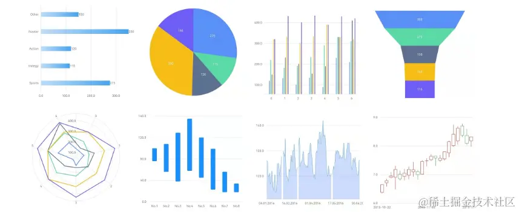

- 01 前言-教程内容导读.md.html
- 02 Flutter 开发环境的搭建.md.html
- 03 新手村基础 Dart 语法 (上).md.html
- 04 新手村基础 Dart 语法 (下).md.html
- 05 Flutter 计数器项目解读.md.html
- 06 猜数字界面交互与需求分析.md.html
- 07 使用组件构建静态界面.md.html
- 08 状态数据与界面更新.md.html
- 09 校验结果与提示信息.md.html
- 10 动画使用与状态周期.md.html
- 11 猜数字整理与总结.md.html
- 12 电子木鱼界面交互与需求分析.md.html
- 13 电子木鱼静态界面构建.md.html
- 14 计数变化与音效播放.md.html
- 15 弹出选项与切换状态.md.html
- 16 用滑动列表展示记录.md.html
- 17 电子木鱼整理与总结.md.html
- 18 白板绘制界面交互与需求分析.md.html
- 19 认识自定义绘制组件.md.html
- 20 通过手势在白板上绘制.md.html
- 21 白板画笔的参数设置.md.html
- 22 撤销功能与画板优化.md.html
- 23 应用界面整合.md.html
- 24 数据的持久化存储.md.html
- 25 网络数据的访问.md.html
- 26 教程总结与展望.md.html
- 捐赠
18 白板绘制界面交互与需求分析
1. 为什么需要 Canvas
之前我们都是通过 Flutter 已有的组件进行组合来构建界面，这种组合式的界面构建方式虽然方便易用，但是也有一些局限性。有些特殊场景的展示效果通过内置的组件拼组很难实现，比如在画板上进行绘制、特殊图案、统计图表的展示等。我们需要一种自己控制绘制逻辑，来完成视图表现的手段，这就是 Canvas 绘制体系。

任何一种界面交互的开发框架，无论是 Web、 还是 Android、iOS 、还是桌面端的界面开发，都会提供 Canvas 让使用者更灵活地控制界面展现。同时，各种平台的 Canvas 操作接口基本一致，所以这项技能一通百通。绘制相当于通过编程来画画，是一项创造性的活动，具有很大的发散空间。
其实，本质上来说 Widget 之所以能展示出来，底层也是依赖于 Canvas 绘制实现的，所以它也不是 Flutter 体系中的异物。掌握 Canvas 的绘制，就能实现更多复杂的界面展示需求，是一个门槛比较高的技能。本教程只是简单的认识，并不能做系统的介绍。如果对绘制感兴趣，可以研读我的小册 《Flutter 绘制指南 - 妙笔生花》
2. 界面交互介绍
白板绘制是本教程的第三个案例，相比于前两个项目，可操作性更强一些，也更有趣。适合新手朋友进一步了解 Flutter 绘制相关知识，体会其创造性，绘制过程中练习 Dart 语法也是个不错的选择。下面是两个最基础的交互：
- 通过监听用户的拖拽手势，让界面留下触点的线条痕迹。
- 可以选择绘制时线条的颜色和粗细两个配置项。
| 画板绘制 | 颜色和线宽选择 |
|---|---|
对于界面绘制内容的管理，提供了两个功能：
- 当界面中存在绘制的线条时，可以回退上一步；在有回退历史时，可以撤销回退。
- 右上角的清除按钮，点击时会弹出对话框确认清除，完成清空绘制的功能。
| 回退和撤销 | 清除内容 |
|---|---|
3. 白板绘制需求分析
现在从数据和界面的角度，来分析一白板绘制中的需求：
- 用户手指拖拽绘制线条
在这个需求中，对于数据来说：线由多个点构成，并且每条线有颜色和粗细的属性，可以通过如下 Line 类型维护点集数据。那么多条线就是 Lines 列表，列表中的元素会根据用户的拖拽操作进行更新。
class Line {
List<Offset> points;
Color color;
double strokeWidth;
Line({
required this.points,
this.color = Colors.black,
this.strokeWidth = 1,
});
}
和木鱼项目选择类似，这里的颜色和线宽，也需要给出支持的选项列表，以及激活的索引值。用户在点击选项条目时更新激活索引数据,在手指拖拽开始是，添加的 Line 宽度和颜色使用激活的数据即可。
对于界面来说，绘制功能通过 CustomPaint 组件 + CustomPainter 画板实现，拖拽手势的监听使用 GestureDetector 组件实现。颜色和线宽的选择器，通过 Flutter 内置的组件来封装。
- 回退撤销清空功能
这三个功能点，都是对线列表数据的维护。回退是将线列表末尾元素移除；由于要撤销回退，需要额外维护被回退移除的元素，撤销回退时再加回线列表中。
对于界面来说，需要注意按钮可操作性的限制，比如当线列表为空时，无法向前回退：
当界面上有内容时，才允许点击左侧按钮回退。撤销按钮同理，只有回退历史中有元素，才可以操作。
这就是白板绘制的需求分析，这个案例的核心是 CustomPaint 组件 + GestureDetector 组件的使用。在数据维护的过程中，是练习语法的好机会，另外它交互性比较强，使用趣味性上是最好的，可以让家里的小朋友随便画画 (如下小外甥女作品)，下面一起开始第二个小项目的学习吧！
| 标题 | |
|---|---|
© 2019 - 2023 Liangliang Lee. Powered by gin and hexo-theme-book.